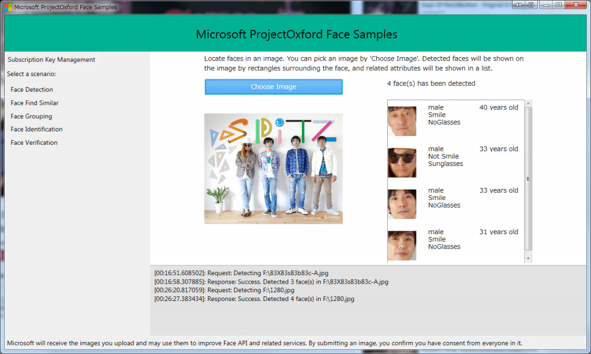

前回は環境構築をしました。
Samle
Cognitive Servicesを使うにあたりサンプルがGithubで提供されています。 Codeplex？何ですか？それ？ FaceはAndroid、Python、Windows、iOSの4環境が用意されています。 WindowsはWPFです。 UWPをプッシュしていたのにWPFとは…. iOSはXcodeでした。Xamarinではないのかよ…. ClientLibraryがあるので覗いてみると、どうやら既存のNugetで配布されているMicrosoft Project Oxford Face APIを参照している模様。 単純にRESTで要求しているだけのよう。 また、サンプル画像を見ると、Detection、Find Similar、Grouping、Identification、Verificationのサンプルがあるようです。 Identification、Verificationということは特徴抽出したデータが存在して、それをファイルにできる？ と思ったらそうではなく、Verificationは、登録した顔データをGuidで管理して、2つの顔が同一人物かどうかの判定し、Identificationはグループ群に指定したGuidの顔を探すだけのようです。 うーん、残念。
Try
{kind=link}
起動すると、Subscription Keyの入力を求められますが、これは前回取得したMicrosoft Cognitive ServicesのFaceにおけるKey1またはKey2になります。Showでキーをコピーして、TextBoxに貼り付けします。
{kind=link}
そしてSave Keyボタンを押下します。 ハードディスクにキーが保存されたことが通知されます。 保存先はSystem.IO.IsolatedStorage.IsolatedStorageFileを使っており分離ストレージ内でした。
{kind=link}
その後、Face Detectionを選択しページを切り替えます。 Choose Imageとあるので、画像を選択します。 今回はLive情報マガジン ライブフリーク様より、スピッツの画像をお借りしました。 私は小学生からのスピッツの大ファンなので。ええ。
{kind=link}
きちんと、マサムネ、テツヤ、タムタムを認識し、テツヤがサングラスをつけていることも認識しています。 あと、検出した画像の表情も認識しています。以前話題になった。Emotion APIですね。 崎ちゃんは画像が小さすぎたのか検出できませんでした。 なお、年齢推測は全部だめです。2016年4月現在全員48歳なので、18-20ずれています。日本人は若く見えるからダメなのかな？ まぁ、この画像がいつ撮影されたのかがわかりませんが。 別の写真だと… 
{kind=link}
マサムネ33歳、テツヤ33歳、タムタム31歳、崎ちゃん40歳。 この画像は公式ファンクラブの壁紙なので割と最近のはず。でも最大17歳の差….
Explanation
ソースを見ましたが使い方は凄い簡単でした。 [code lang=”csharp”] using (var fileStream = File.OpenRead(SelectedFile)) { try { MainWindow mainWindow = Window.GetWindow(this) as MainWindow; string subscriptionKey = mainWindow._scenariosControl.SubscriptionKey;
var faceServiceClient = new FaceServiceClient(subscriptionKey); Contract.Face[] faces = await faceServiceClient.DetectAsync(fileStream, false, true, new FaceAttributeType[] { FaceAttributeType.Gender, FaceAttributeType.Age, FaceAttributeType.Smile, FaceAttributeType.Glasses }); [/code] 画像ファイルのFileStreamを渡してあげるだけのお手軽さです。 なんということでしょう。
Conclusion
素晴らしいAPIがこんなにも簡単に使えるとは本当に素晴らしいです。Microsoft!!